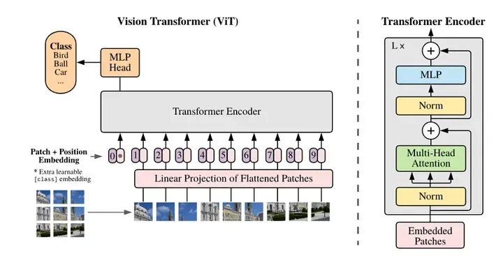

Vision Transformers run at a fixed image resolution. Easy images still go through the full high resolution pipeline, wasting time and compute.
In this post, I explain a Dynamic Vision Transformer that adapts resolution only at inference time. The model starts with low resolution and switches to high resolution only when needed. This gives speedups without changing training or architecture.
Why Every Image Does Not Need Full Resolution
A standard Vision Transformer processes every image the same way, same resolution, same number of layers, and compute cost. This is a problem because most images are easy. For example, a clear image of a car does not need the same effort as a blur or distorted image.
Still, the model always runs at high resolution, which means higher latency, GPU memory usage and wasted compute during inference. Instead of scaling models up, I did work on making inference smarter.
Implementation
The implementation of this idea does not disturb the architecture, it is just applied after the model is trained, i.e. during inference. It uses the single Vision Transformer architecture and same weights are used for both the resolutions. A distance threshold decides the escalation and only a small fraction of images move to high resolution, this just introduces an adaptive behaviour. You can see the full implementation with code at: https://github.com/prashantpandeygit/dViT
Dynamic Resolution at Inference
Idea is to start inference with a low resolution (32x32) image, and check how confident the model is, and the model is confident enough (calculated using proxy signals and class token) then stop early, else run with higher (64x64) resolution.
During inference, the class token is extracted at early transformer layer, it is then compared with the final layer class token. If the change is small the model is confident, else the image is hard and needs more details, this is what we call a cheap proxy signal.
Results
The model was trained and tested on CIFAR-10.
- ~2.27× faster than always using high resolution
- Only ~9% of images escalate to high resolution
- Lower average latency per image
- Peak VRAM only increases when escalation happens
The trained model can be found at: https://huggingface.co/parkneurals/lowres-visiontransformer-cifar10